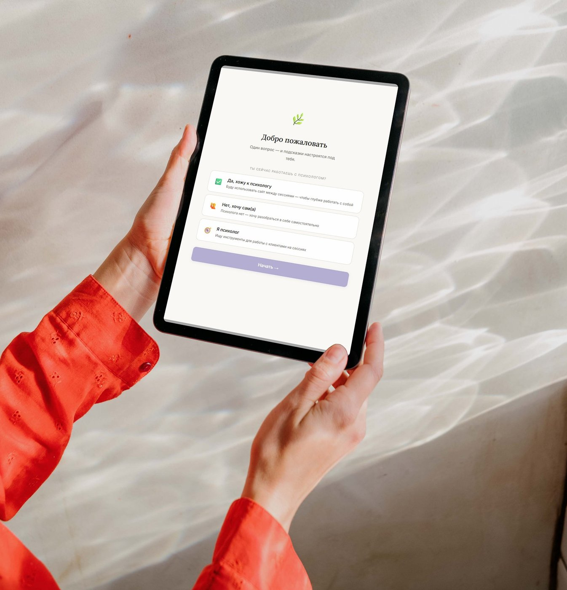
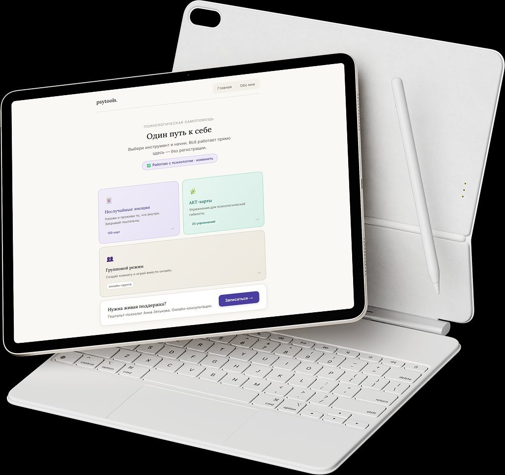
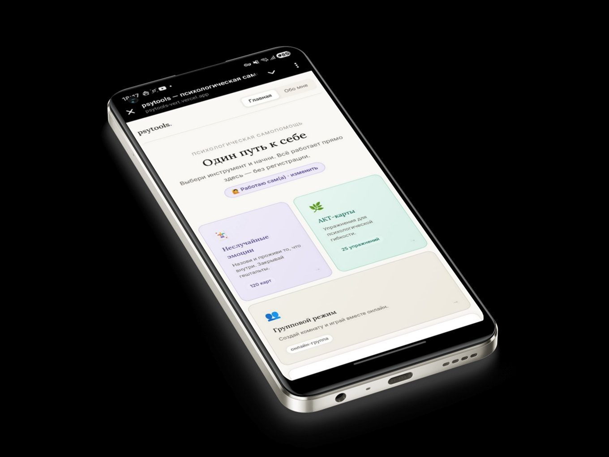
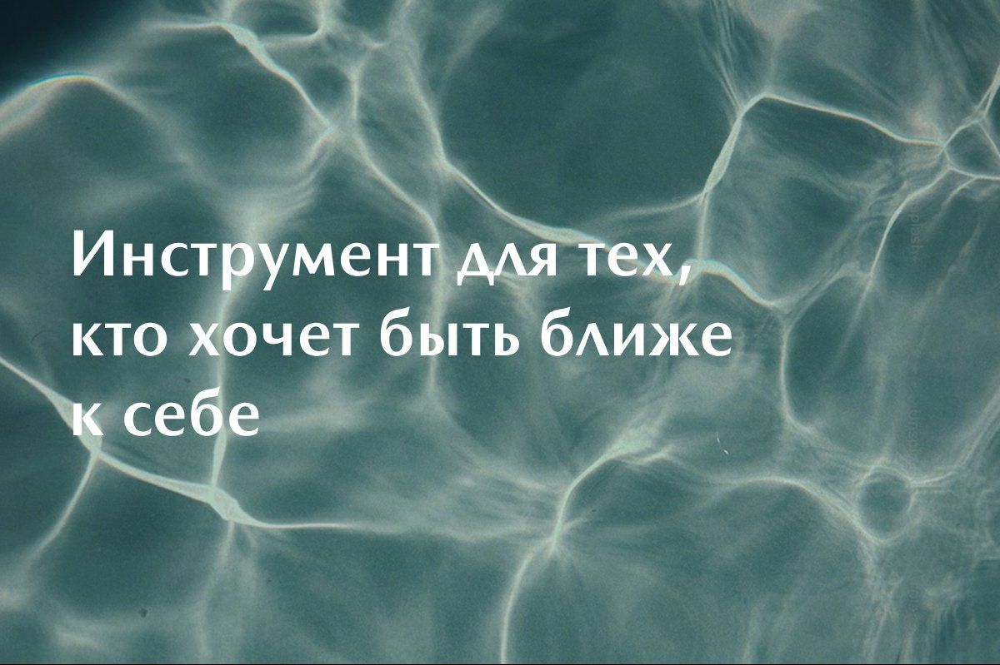
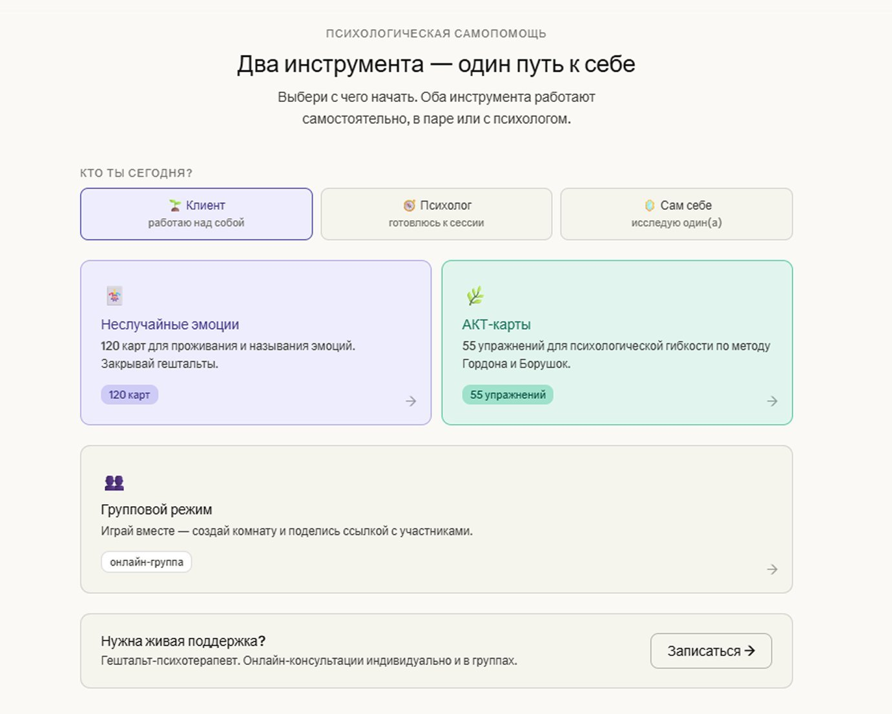
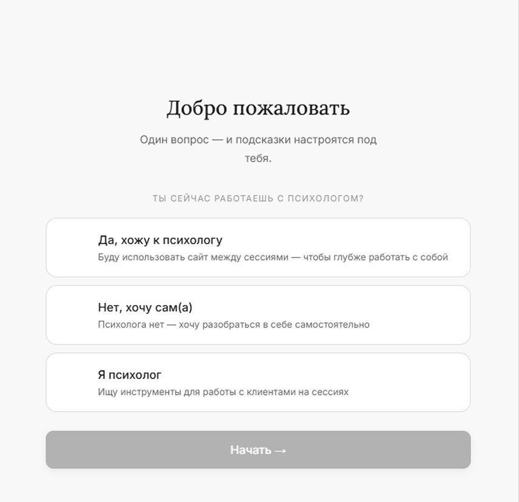
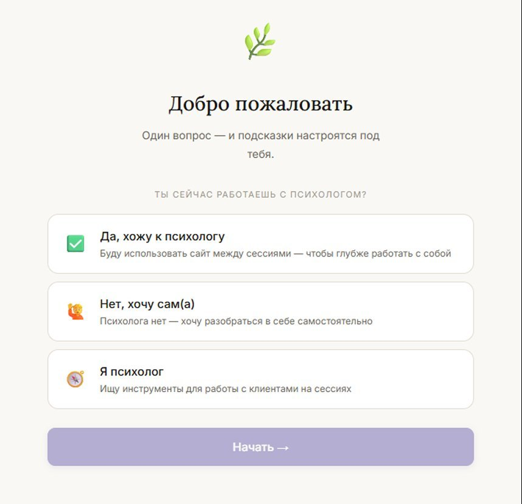
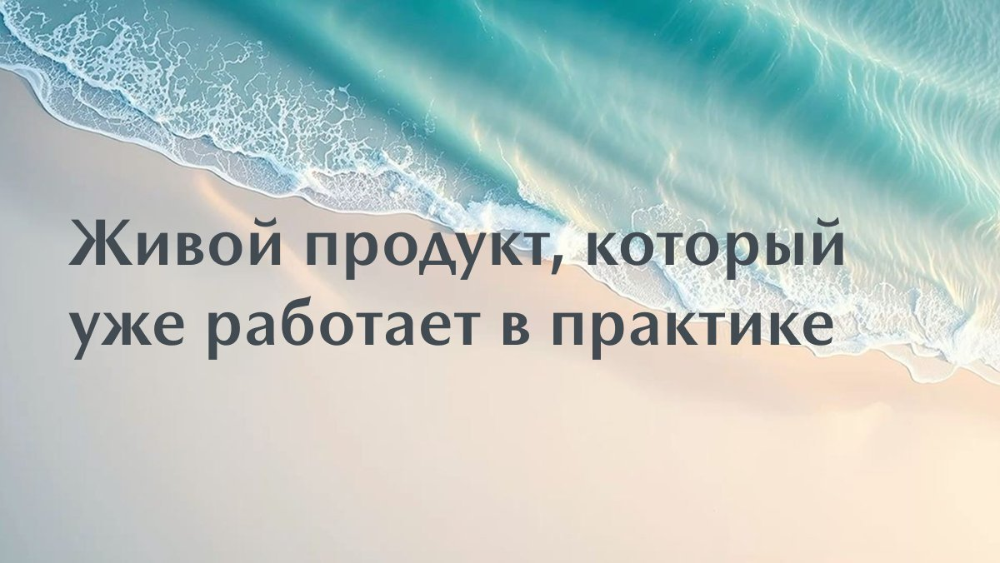

PsyTools
Психологические карты в браузере — без регистрации, без приложений. Инструмент самопомощи на основе гештальт-подхода и АКТ, который я придумала, спроектировала и запустила.



Зачем этот продукт
Я гештальт-психотерапевт. Между сессиями клиенты теряют контакт с тем, что происходило в работе. Нужен инструмент — простой, без порога входа, на научной основе.
Большинство психологических приложений либо слишком академичны, либо слишком поверхностны. Научная база — в формате «открыл и работаешь».
«Когда не знаешь как называется то, что внутри — нужно начинать не с ума, а с тела. Это стало ключевым UX-решением.»
Проблема рынка
Академические инструменты требуют подготовки. Медитативные приложения слишком упрощены. Карточные колоды существуют только офлайн.
Решение
Гештальт-подход и АКТ — упакованы в простой интерфейс. Вход через тело, а не через ум.

Как создавала
Проект полностью авторский — от идеи до задеплоенного продукта. Работала итерациями: каждый этап заканчивался тестированием и конкретными выводами.
Два модуля и их логика: «сначала прожить → потом действовать». Механика телесного навигатора как ключевое отличие.
Рабочий прототип с 12 эмоциями и 17 АКТ-картами. Проверила оба пути входа. Нашла первые проблемы.
Прошла продукт с позиций трёх ролей: пользователь, дизайнер, психолог. Три критичные проблемы → три итерации.
120 карт эмоций, 25 АКТ-упражнений, групповой режим, мобильная адаптация, SEO.
Продукт запущен, используется на реальных сессиях.

Абстрактные роли без объяснений. Пользователь не понимает зачем выбирать.

Конкретный вопрос вместо абстрактного выбора роли. Структура стала понятной.

Иконки ролей, тёплая палитра, кнопка активируется только после выбора.
Что именно придумала
Роль + 3 модуля + баннер + поделиться — всё сразу. Взгляд не знает куда идти.
Один вопрос на первом экране. Кнопка «Начать» активируется только после выбора.
«Клиент / Сам себе / Психолог» — абстракция. Люди не понимали зачем это нужно.
«Ты сейчас работаешь с психологом?» — конкретный вопрос. Ответ очевиден.
После финальных вопросов — тишина. Непонятно: это конец? Помогло?
Финальный экран «Ты завершил практику» + три варианта что делать дальше.

Что получилось
Продукт работает в реальной практике — на сессиях и в группах. Сейчас это бесплатный инструмент и точка входа для клиентов. При росте аудитории — самостоятельный продукт с монетизацией.